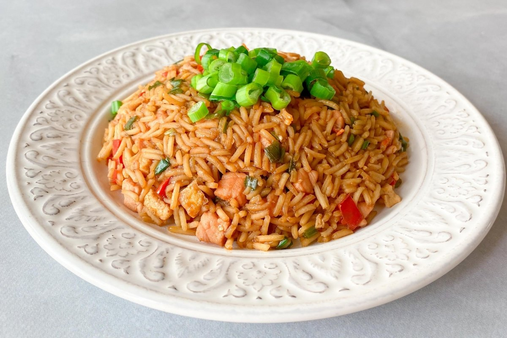

Arroz chaufa is a popular Peruvian dish with a great influence of Chinese cuisine. It consists of a combination of fried rice, meats, vegetables, and fruits. Most commonly, rice is fried with shredded chicken, salami, garlic, ginger, slivered almonds, eggs, chicken stock, soy sauce, etc.
Meal prep time : 15 minutes
Servings : 5